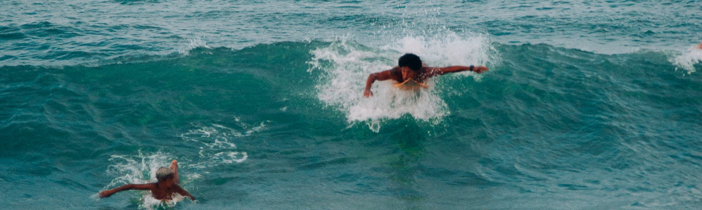
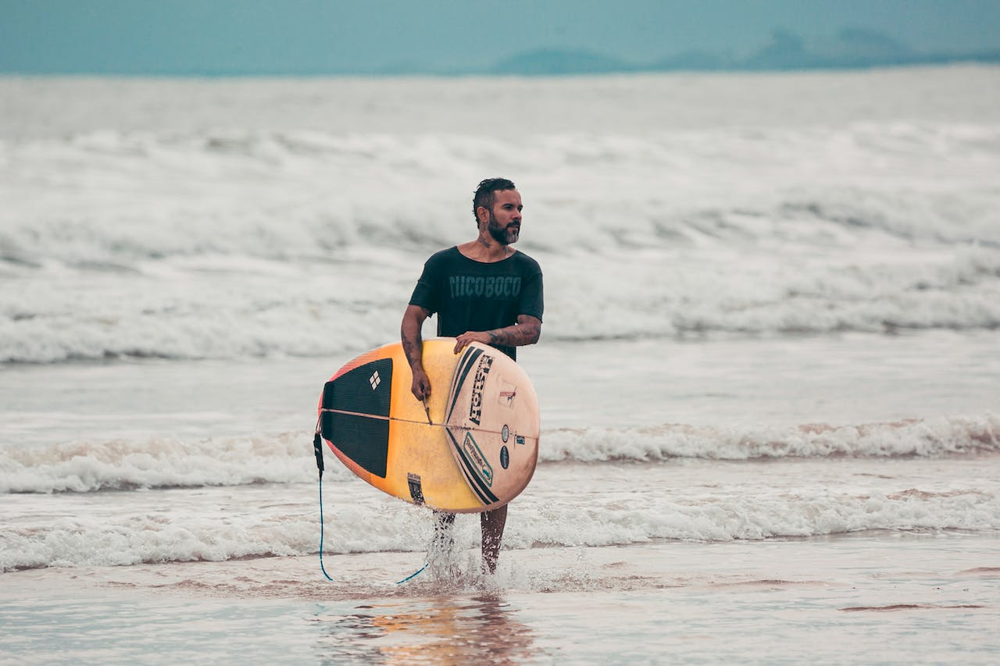
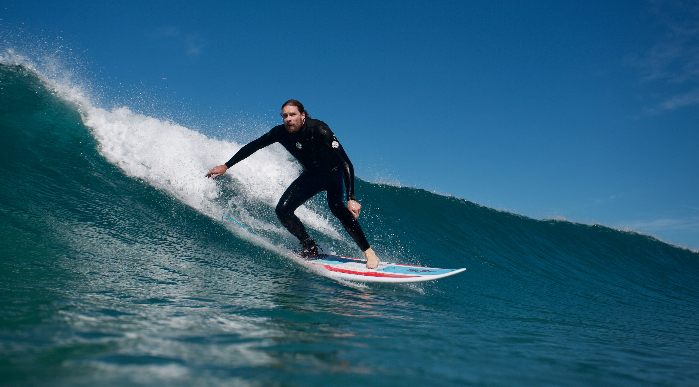
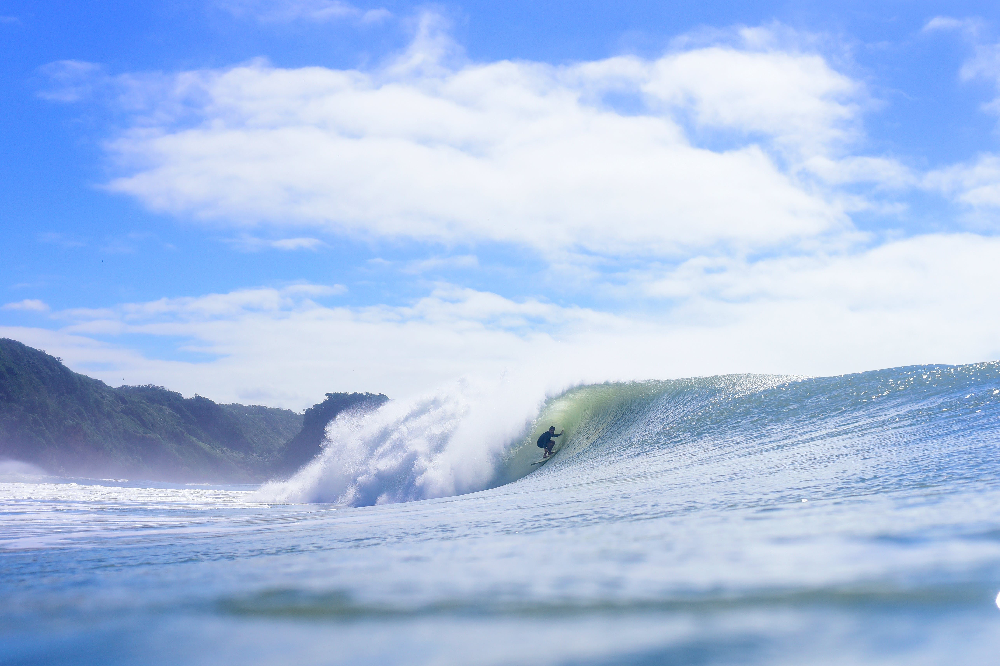

Aprenda a Surfar
Existem diversas formas de aprender a surfar
Podemos começar a aprender no Mar
A experiência de aprender a surfar no mar pode ser emocionante, desafiadora e gratificante.Muitas pessoas ficam animadas ao embarcar na jornada de aprender a surfar. A perspectiva de deslizar sobre as ondas e sentir a energia do oceano é uma fonte de empolgação
Desafios Iniciais
Inicialmente, pode ser desafiador encontrar o equilíbrio na prancha, remar eficientemente e realizar o "pop-up" para ficar de pé. A força física e a coordenação são desenvolvidas ao longo do tempo.
Aprender a surfar proporciona uma oportunidade única de se conectar com a natureza. Você estará na água, enfrentando as ondas e absorvendo a beleza do ambiente marinho.
Como pegar seu primeiro tubo
Pegar seu primeiro tubo no surf é um marco emocionante e desafiador. O tubo, também conhecido como "barrel" ou "cavado", ocorre quando o surfista surfa dentro da parede da onda enquanto ela quebra, criando uma espécie de túnel de água ao redor do surfista. Aqui estão algumas dicas para ajudar você a buscar seu primeiro tubo:
Meu aprendizado
Eu comecei surfando em uma piscinas de ondas,surfar em uma piscina de ondas, também conhecida como piscina de ondas artificiais, oferece uma experiência única em comparação com o surf no oceano. Piscinas de ondas são ambientes controlados, projetados para criar ondas consistentes e surfáveis.
Fazendo Manobras
Fazer manobras no surf adiciona uma dimensão dinâmica e empolgante à prática do esporte. As manobras podem variar em complexidade, desde movimentos básicos até manobras mais avançadas.
Aerials envolvem o surfista levantar-se da face da onda, muitas vezes realizando um giro ou movimento acrobático no ar. Essas manobras são avançadas e requerem muita habilidade e prática.